Precision Environmental Control
Automatic, precision environmental control systems.
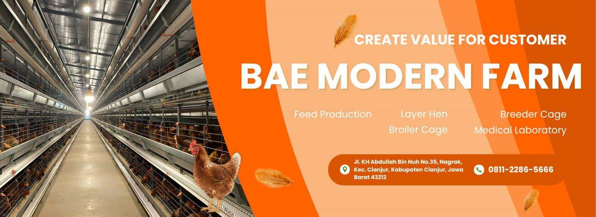
Precision environmental control, automatic feeding and a digital management platform — integrating IoT, big data and AI. Type H and Type A cages.
Biovet Agriculture Equipment Indonesia (BAE) researches, develops and sells smart, efficient poultry and livestock equipment, integrating IoT, big data and AI into every product — also known as BAE Farming Poultry Equipment and BAE Poultry Farm.
Automatic, precision environmental control systems.
Automatic feeding machines for optimal large-scale distribution.
A digital management platform for professional, fast, comprehensive service.
Committed to continuous innovation for environmentally friendly, efficient farming.
Cage, feed, water, climate and control systems for large-scale farms — maximum capacity, natural ventilation and high automation, configured to your house climate.
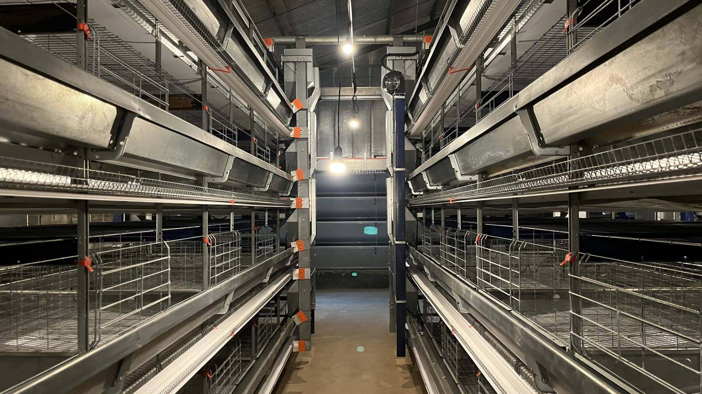
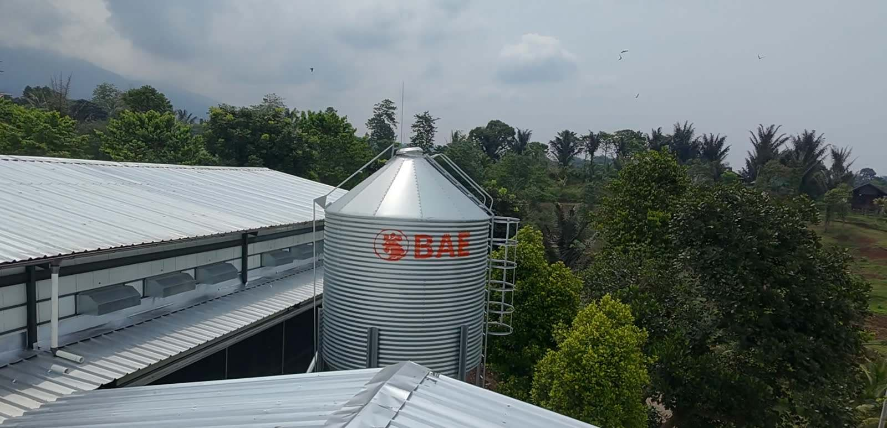
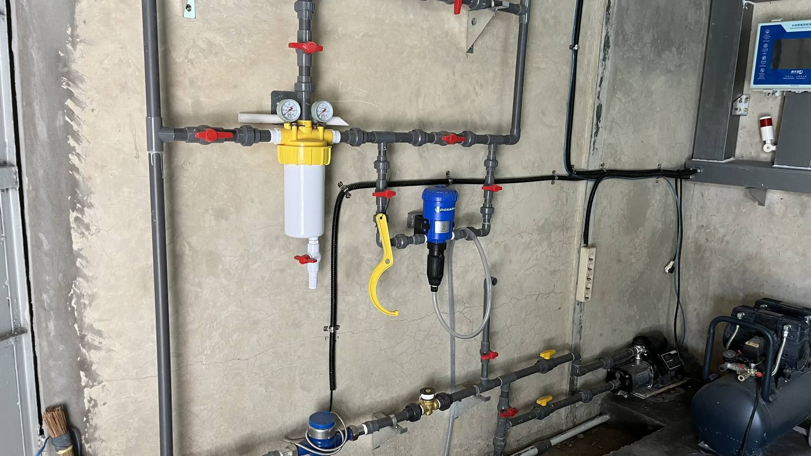
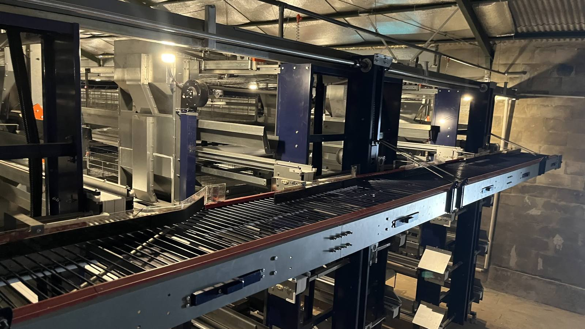
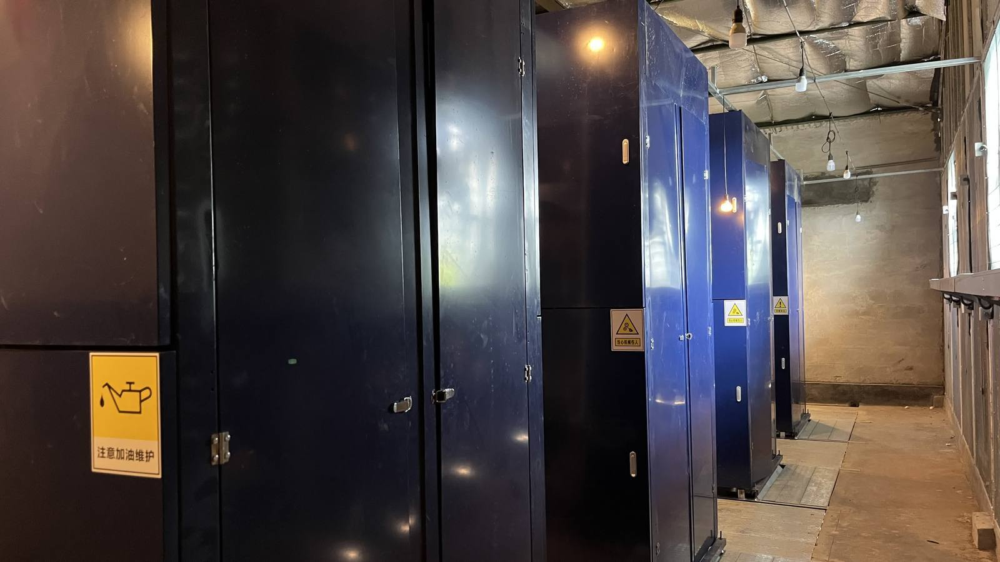
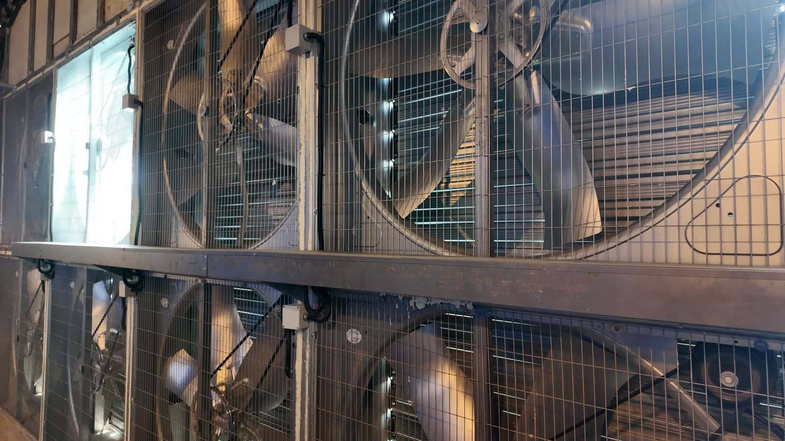
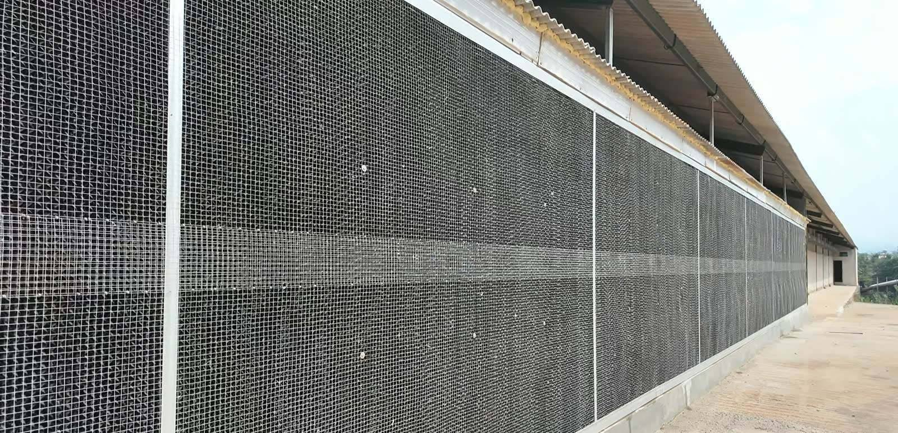
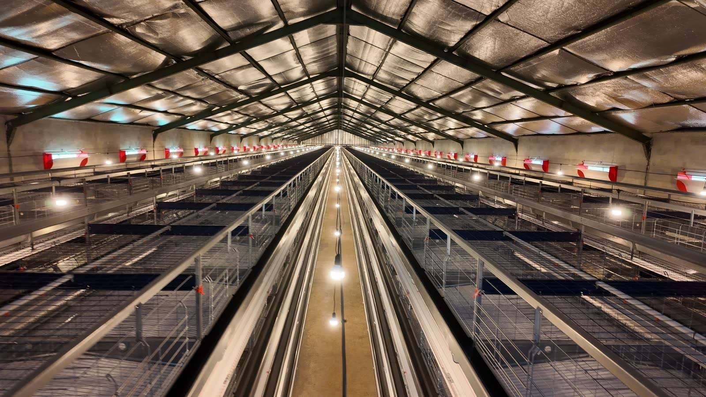
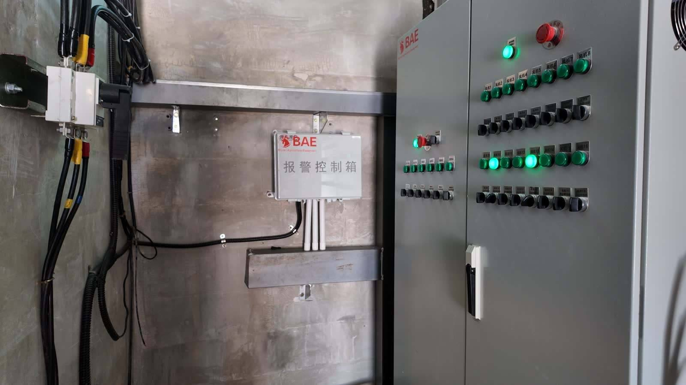
Fill in flock size and house size — your WhatsApp chat is composed automatically.
Type H pullet cages (3-8 tiers) and Type A layer cages (3-4 tiers) for high-temperature regions.

Tiered pullet cage for young birds, configurable with 3-8 tiers to customer needs: cage body, feeding, drinking, manure removal, lighting, environmental control, IoT and more.
Specs →
Cost-effective A-series layer cage for high-temperature regions: maximum capacity with natural ventilation; 3-4 tiers with configurable manure cleaning and feeding.
Specs →Real houses: climate challenge, equipment package and results. More portfolios on social media: Youtube, Tiktok, Instagram.
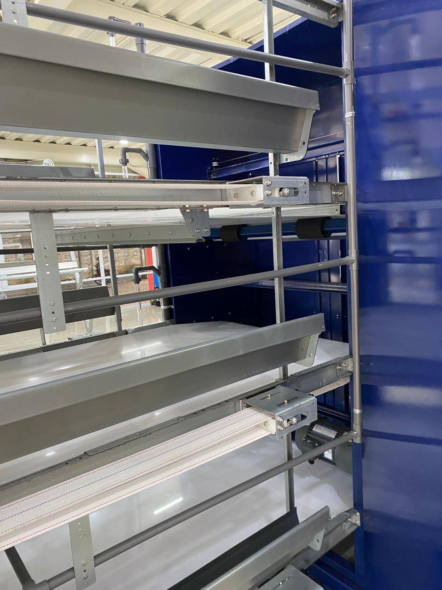
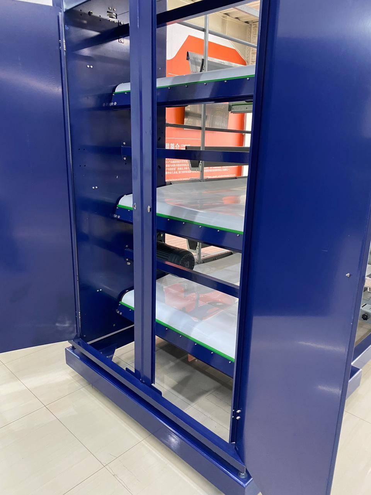
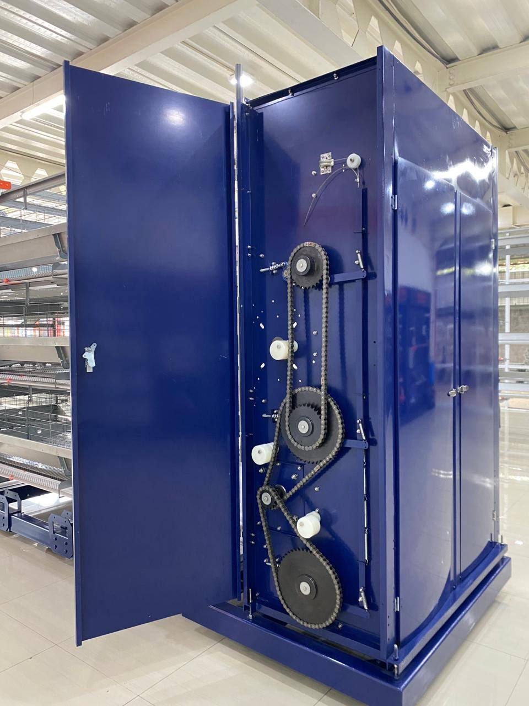
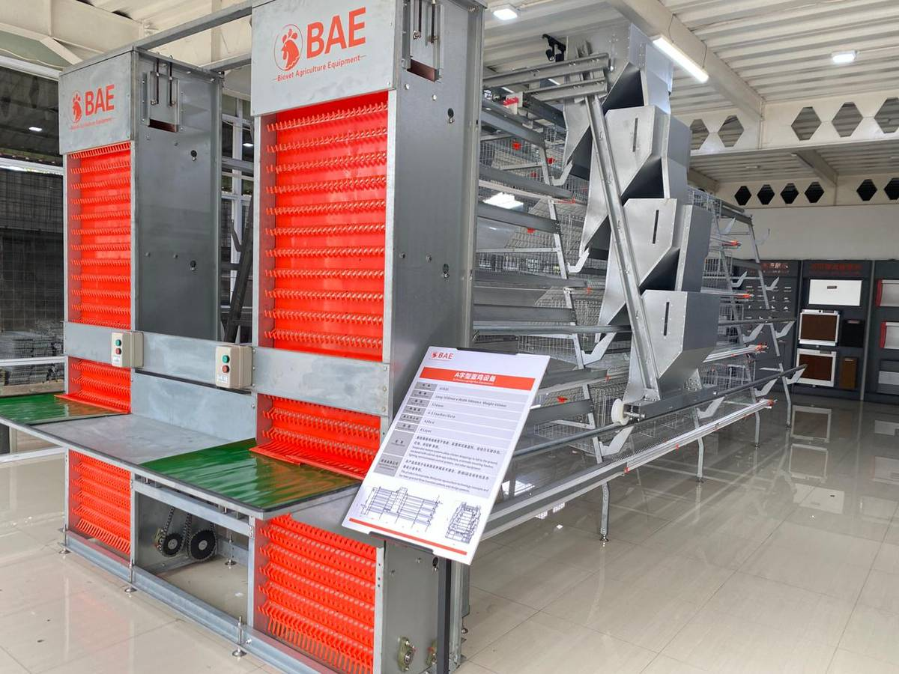
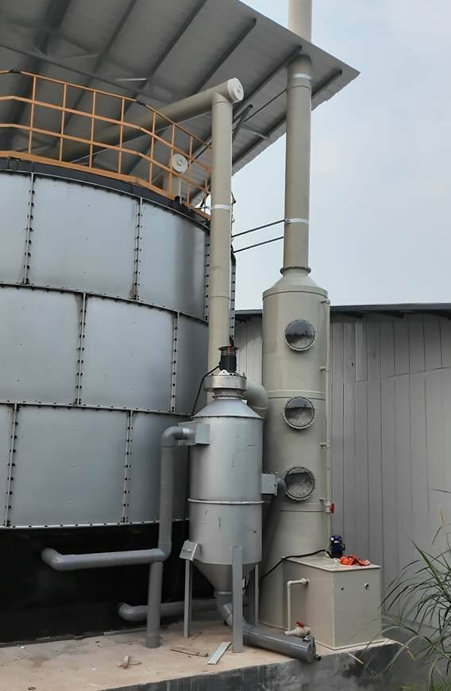
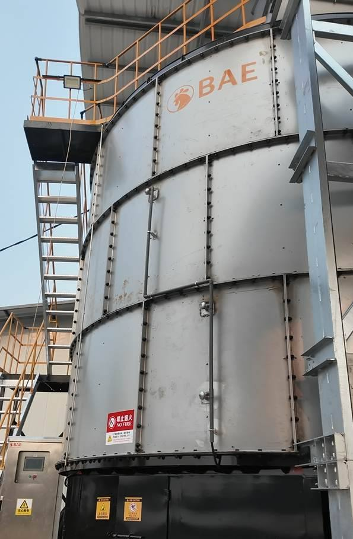

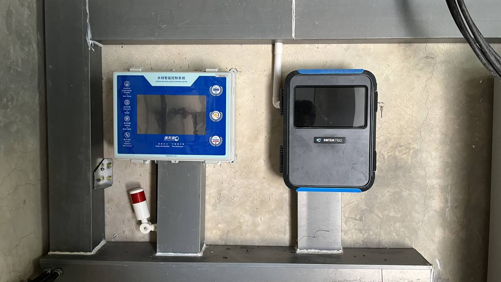
Practical guides: prices, cage types, hot-region housing, and cracked-egg prevention.
Tier count, house length, and equipment configuration determine the price.
Read →Type H for pullets with high automation, Type A for layers in hot regions.
Read →Automatic egg collection with per-tier elevators keeps crack rates low.
Read →Answers about prices, cage types, and BAE equipment.
Price depends on the number of tiers, house length, and equipment configuration (automatic feeding machine, egg collector, manure cleaner). Contact BAE via WhatsApp +62-811-2286-5666 for a quote tailored to your farm.
Type H cages (pullet, 3-8 tiers) are for young birds with high automation. Type A cages (layer, 3-4 tiers) are cost-effective for high-temperature regions with natural ventilation.
Yes. The Type A layer cage is designed for high-temperature regions with natural ventilation and maximum capacity, plus an optional cooling system.
The automatic BAE egg collector reduces egg-to-egg impact with an elevator adjusted to the number of tiers, keeping the crack rate low with high efficiency.
Yes. Q235 steel coated with hot-dip galvanizing or zinc-aluminium alloy, with a corrosion-resistant zinc-aluminium-magnesium alloy steel frame.
Yes: feeding system, egg collection, manure treatment, drinking system, environmental control, lighting, feed silo, and trolleys. Every motor ships with extra spare parts.
Reach Biovet Agriculture Equipment Indonesia — BAE Farming Poultry Equipment — via WhatsApp, Instagram, Youtube or Facebook.
WhatsApp: 081-122-865-666